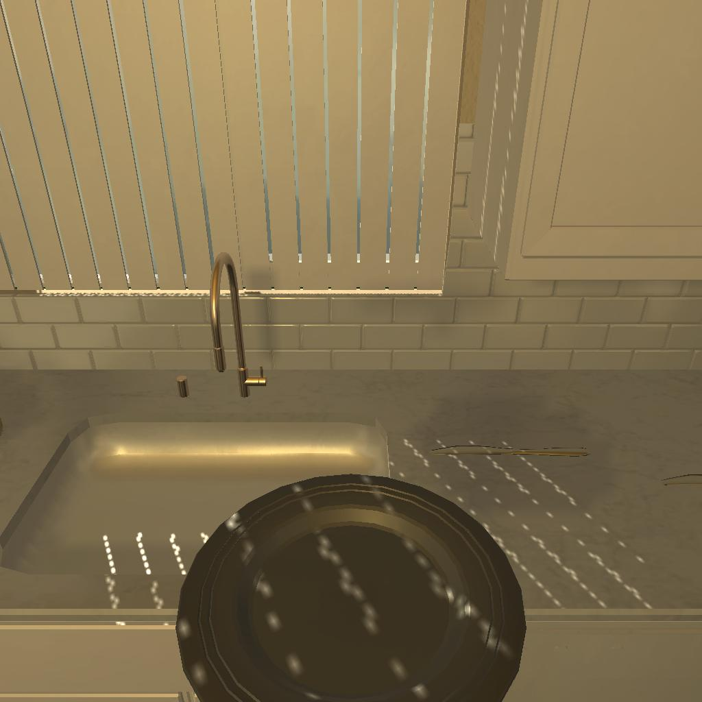

---------------------------------------------------------task: 10---------------------------------------------------------
--------------------------------------------------------------------------------------------------------------------------------------------------------------------
--------------------------------------------------------------------------------------------------------------------------------------------------------------------
Step:--------------------------------------------------------------------------17-------------------------------------------------------------------------------
----------------------------------------
VLM Prompt:
**Task**
Please perform as an embodied AI agent. Our final objective is to clean some plate and put it in countertop. Below is the plan for completing the task, the current observation, alongside historical data and admissible actions for the next step. Please determine the best action for the next step!
**Plan**
Below is a detailed step-by-step plan to complete the task.
1. Find a plate.
2. Pick up the plate.
3. Find a sink or basin.
4. Clean the plate with the sink or basin.
5. Find a countertop.
6. Place the cleaned plate on the countertop.
**Current Observation**
Displayed is an image capturing the current position of the agent.
**History Information**
Displayed are the previous observations with their corresponding actions.
Current State 1:
1. Place: Unknown location near a sink
2. Step Index in Plan: 1
3. Objects: Plate, Sink, Cabinet
4. Action: Go to cabinet 1
Current State 2:
1. Place: In front of a wall and a partial view of a cabinet
2. Step Index in Plan: 1
3. Objects: Wall, partial cabinet view, cabinet 1 (previously explored), cabinet 2
4. Action: go to cabinet 2
Current State 3:
1. Place: Kitchen
2. Step Index in Plan: 1
3. Objects: Countertop, plate, toaster
4. Action: Go to toaster 1
Current State 4:
1. Place: Countertop area
2. Step Index in Plan: 1
3. Objects: Plate
4. Action: Go to countertop 1
Current State 5:
1. Place: Countertop
2. Step Index in Plan: 1
3. Objects: Pot, Bowl, Cup, Toaster
4. Action: Go to cabinet 3
Current State 6:
1. Place: Cabinet 3
2. Step Index in Plan: 1
3. Objects: Cabinet 1, Cabinet 2, Toaster 1, Countertop 1, Cabinet 3, Cabinet 4
4. Action: Go to cabinet 4
Current State 7:
1. Place: In front of a microwave on a countertop
2. Step Index in Plan: 1
3. Objects: Cabinet 4, microwave, countertop
4. Action: Open cabinet 4
Current State 8:
1. Place: In front of a microwave on a countertop
2. Step Index in Plan: 1
3. Objects: Cabinets, Countertop, Microwave
4. Action: Go to cabinet 5
Current State 9:
1. Place: In front of the countertop with a microwave
2. Step Index in Plan: 1
3. Objects: Countertop, garbage can
4. Action: Open cabinet 5
Current State 10:
1. Place: In front of a countertop with a microwave and a garbage can.
2. Step Index in Plan: 1
3. Objects: Cabinet, Plate, Countertop, Microwave, Garbage Can
4. Action: Go to cabinet 16
Current State 11:
1. Place: In front of cabinet 16
2. Step Index in Plan: 1
3. Objects: None visible (image looking at ceiling and cabinet doors)
4. Action: Open cabinet 16
Current State 12:
1. Place: unknown location with a view of the ceiling and cabinet doors
2. Step Index in Plan: 1
3. Objects: no objects related to the task at hand are visible
4. Action: go to cabinet 6
Current State 13:
1. Place: Kitchen (specifically at the countertop)
2. Step Index in Plan: 1
3. Objects: Tomatoes
4. Action: Open cabinet 6
Current State 14:
1. Place: Kitchen at the countertop
2. Step Index in Plan: 1
3. Objects: Countertop, two tomatoes, microwave, (previously observed) plate
4. Action: Open cabinet 6
Current State 15:
1. Place: In front of a countertop with a microwave
2. Step Index in Plan: 1
3. Objects: Plate
4. Action: Take plate 1 from cabinet 6
Current State 16:
1. Place: Cabinet 6, countertop, microwave area
2. Step Index in Plan: 2
3. Objects: Plate
4. Action: Go to sink 1
Current State 17:
1. Place: Not specified in context
2. Step Index in Plan: 3
3. Objects: Plate 1, Sink 1
4. Action: Clean plate 1 with sink 1
**Admissible Actions**
(1): go to cabinet 1
(2): go to cabinet 2
(3): go to cabinet 3
(4): go to toaster 1
(5): go to cabinet 4
(6): go to cabinet 5
(7): go to microwave 1
(8): go to garbagecan 1
(9): go to countertop 1
(10): go to drawer 1
(11): go to cabinet 6
(12): go to cabinet 7
(13): go to drawer 2
(14): go to stoveburner 1
(15): go to stoveburner 2
(16): go to countertop 2
(17): go to cabinet 8
(18): go to cabinet 9
(19): go to cabinet 10
(20): go to drawer 3
(21): go to drawer 4
(22): go to stoveburner 3
(23): go to stoveburner 4
(24): go to cabinet 11
(25): go to cabinet 12
(26): go to cabinet 13
(27): go to cabinet 14
(28): go to sinkbasin 1
(29): go to cabinet 15
(30): go to fridge 1
(31): go to cabinet 16
(32): go to cabinet 17
(33): go to cabinet 18
(34): go to cabinet 19
(35): go to diningtable 1
(36): go to coffeemachine 1
(37): go to cabinet 20
(38): put plate 1 in/on sink 1
(39): clean plate 1 with sinkbasin 1
(40): examine plate 1
**Analysis Guideline**
1. Analyze the **History Information** and determine our current step in the plan and our current place.
2. List all visible objects related to the task in the current observation.
3. Analyze the objects in the current observation based on the history and the requirements for the current step, and then determine if we can complete the step with the current observation.
4. Analyze and decide on the most appropriate action to take.
5. Summarize the analysis using the following format: "Analysis: [The summarization of the analysis], The Most Appropriate Action: (i which is the integer.): [Selected action]"
**Notes**
1. We must complete each step of the plan in order and cannot skip steps when the previous ones are not finished.
2. For "Go to" actions listed as "go to xxx [n]", interpret this as there are n distinct actions available: "go to xxx 1", "go to xxx 2", ..., "go to xxx n". Select one specific action from these options instead of using "go to xxx [n]".
3. If receptacles such as drawers, cabinets, and so forth are closed in the current observation, we may try to open them.
4. Pay attention to synonyms and ensure clarity in the terms used.
5. If there is no history available, we are at the first step and the current place is "Unknown".
6. The most appropriate action must be in the **Admissible Actions**, and we cannot generate a new action that is not in the **Admissible Actions**.
**Answer**
Please select the most suitable action by following the **Analysis Guideline**, keeping the above **Notes** in mind.
----------------------------------------
----------------------------------------
VLM Response:
Analysis: According to the History Information, we are currently on step 4 in our plan, which is to clean the plate with the sink or basin. In the Current Observation, we can see the plate is in front of the agent and there is a sink visible. This matches the requirements for our current step in the plan. Therefore, we can complete the step with the current observation.
The Most Appropriate Action: (39): clean plate 1 with sinkbasin 1
----------------------------------------
----------------------------------------
>>> Refine VLM Response and Get Pure Action: clean plate 1 with sinkbasin 1
----------------------------------------
-----------------------------------------------------------------
Running time: 25.183672189712524 seconds
Total Money: 5.1091799999999985
-----------------------------------------------------------------
-----------------------------------------------------------------
Summarization Prompt:
**Context**
Analysis: According to the History Information, we are currently on step 4 in our plan, which is to clean the plate with the sink or basin. In the Current Observation, we can see the plate is in front of the agent and there is a sink visible. This matches the requirements for our current step in the plan. Therefore, we can complete the step with the current observation.
The Most Appropriate Action: (39): clean plate 1 with sinkbasin 1
**Summary Format**
1. Place: [Specify the current location]
2. Step Index in Plan: [Dispkay the current step number in the plan before taking the current action]
3. Objects: [List the objects relevant to the task]
4. Action: [Describe the most appropriate action without the "(x)" and keep the integer of the object]
Please analyze the **Context** and summarize the analysis using the **Summary Format**.
-----------------------------------------------------------------
-----------------------------------------------------------------
Summarization Response:
1. Place: In front of the sink or basin
2. Step Index in Plan: Step 4
3. Objects: Plate, Sink/Basin
4. Action: Clean plate 1 with sinkbasin 1
-----------------------------------------------------------------
-----------------------------------------------------------------
Text Observation:Nothing happens.
-----------------------------------------------------------------
UNSUCCEED